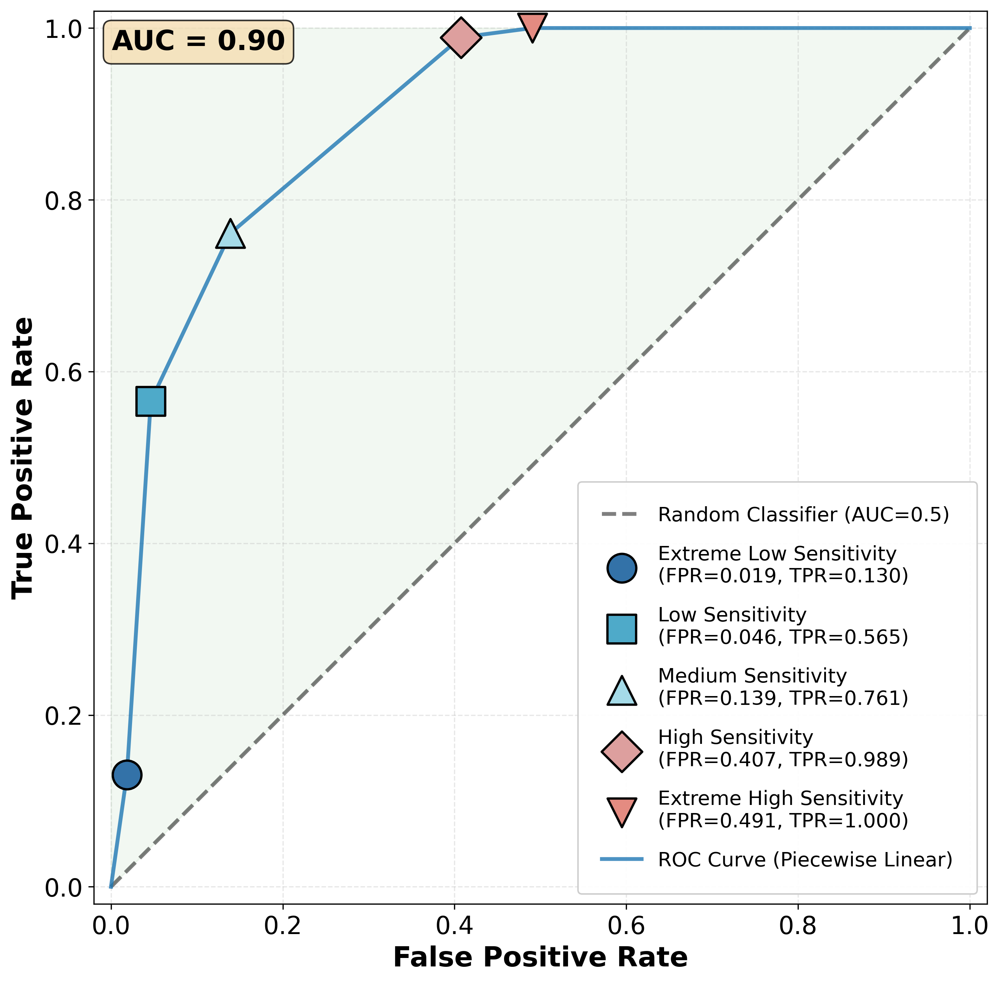
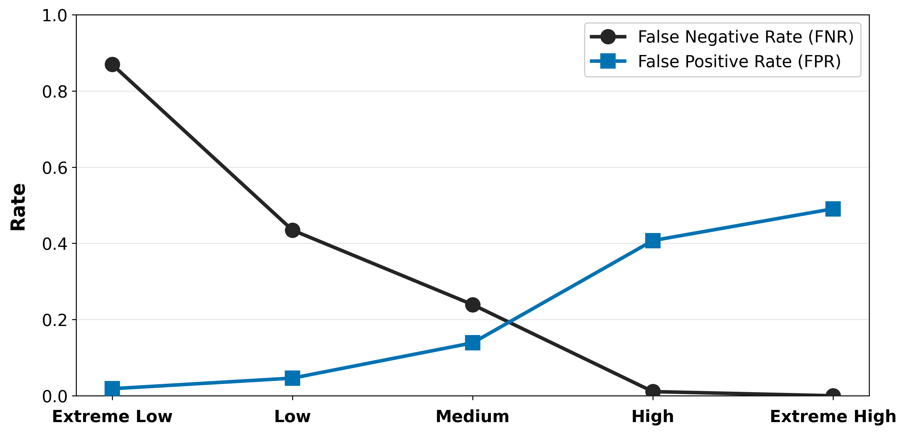
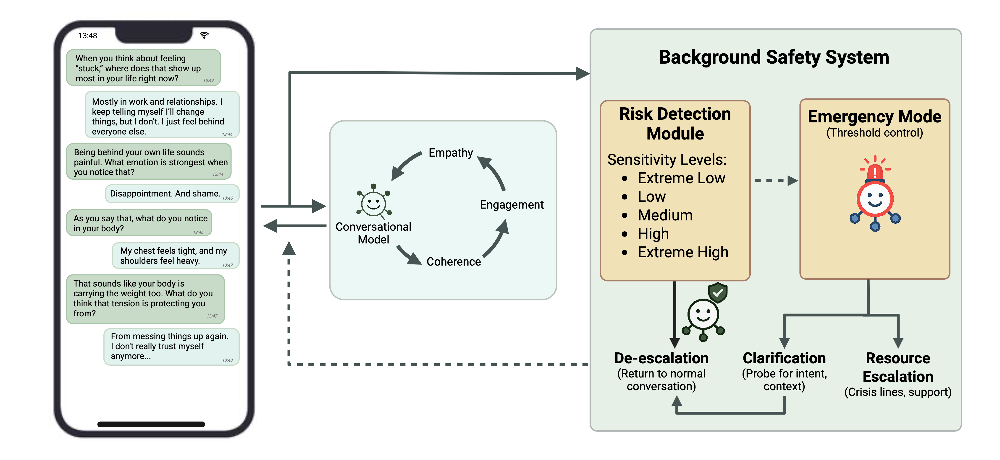

Featured Project 02
Suicide Prevention and AI
This project focused on one practical question: how can LLM-based mental-health chatbots detect suicide- and crisis-risk in real time without relying on unrealistic assumptions about perfect certainty?
1. The Problem
LLMs are increasingly used in mental-health chatbots, especially in systems designed to provide low-threshold support at scale. But suicide- and crisis-risk detection is not a normal classification task. There is no perfect ground truth, clinician disagreement is substantial, and the real operational problem is not abstract accuracy, but whether a risky situation is missed in real time.
This project reframed the problem accordingly: instead of asking whether a model is simply "accurate," we asked how a chatbot can monitor crisis risk safely under uncertainty, with a strong bias toward not missing dangerous cases.
2. Collaboration with Sonia Health
This work emerged from a collaboration between our academic team and Sonia Health, a US-based mental-health technology company. Sonia were interested in clinical expertise around suicide- and crisis-related content, while we were interested in the real-world deployment challenges of conversational AI in mental-health support.
As a wellness-oriented product operating in the context of the US mental-health care crisis, Sonia faced a concrete safety problem: users might mention suicidal ideation or acute crisis in the middle of otherwise supportive conversations. We therefore worked together on a separate LLM-based risk-detection layer that could monitor conversations conservatively and trigger an operational emergency mode when needed.
3. Claim 1: Suicide Risk Detection Is Inherently Uncertain
Using 200 real-world conversation segments from a deployed mental-health chatbot, annotated independently by five clinical experts, we tested five prompt-based detection variants with increasing sensitivity. The starting point of the paper is that suicide- and crisis-risk detection does not have a clean ground truth. Even trained clinicians disagree on borderline cases, which means model errors cannot simply be interpreted as model failure. Risk detection is therefore inherently uncertain.

4. Claim 2: Errors Cannot Be Eliminated, but Sensitivity Can Be Calibrated
The key operational finding was that prompt-based sensitivity calibration changes the balance between false negatives and false positives in a systematic way. As sensitivity increased, the false-negative rate dropped monotonically from 87% to 0%, while false positives rose accordingly. In other words, the system cannot remove uncertainty, but it can be tuned to behave conservatively when safety matters most.

5. Claim 3: Safety Is Not a Classification Task
The most important conclusion of the paper is architectural. Suicide- and crisis-risk detection in conversational AI should be treated as an online, uncertainty-aware safety problem, not as a conventional accuracy benchmark. This is why the project proposes an emergency mode in which conservative risk detection operates independently from the conversational model. Supportive dialogue can continue, but under a different safety regime.

That shift is the core message of the project: move away from accuracy-based performance metrics alone and toward a framework that accepts uncertainty, prioritizes safety, and is designed for real deployment in mental-health systems.